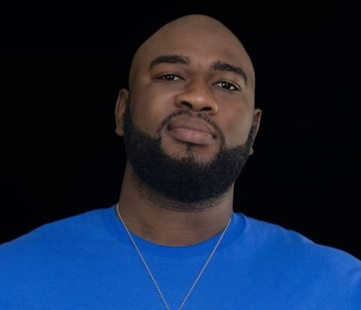

Welcome to my digital home!
Welcome to my digital home! I'm delighted to have you here, and I invite you to explore my world of experiences, skills, and passions. This website reflects who I am, and I've poured my heart and soul into creating a space where you can get to know me better. Whether you're an employer seeking a dedicated professional, a fellow enthusiast looking to connect, or a curious soul eager to learn from my journey, you're in the right place. So, make yourself comfortable, click around, and let's embark on this exciting journey together. I hope you find inspiration, information, and a sense of connection during your visit.
About Me Section.
In the "About Me" section, you'll discover a comprehensive journey through my academic and professional experiences. I'll take you on a tour of my life, from my earliest educational milestones to the current stage of my career. This section provides a detailed historical account of the pivotal moments and challenges that have shaped me into the professional I am today. Additionally, you'll have access to My resume, where I've outlined My work history, roles, responsibilities, and notable achievements. It's not just a mere listing of qualifications; it's a story of growth, learning, and dedication that I'm excited to share with you.
Discover My Portfolio.
Whether you are prospective employers seeking a comprehensive overview of my qualifications, collaborators interested in potential partnerships, recruiters and hiring managers looking for a candidate's profile, or a general audience curious about my personal and professional journey, this website provides valuable insights and an opportunity for networking. With its dynamic content and user-friendly design, this site is a destination where you can easily connect with me and gain a deeper understanding of my abilities and interests.
Navigating My Professional Journey and Expertise.
You will find answers to key questions about my professional background and personal journey. You will seek clarity on my qualifications, including my educational and professional achievements, as well as a clear understanding of the specific skills and expertise I bring to the table. Furthermore, you will anticipate information on my current and past projects or experiences, which will help them gauge the scope of my work. Additionally, you will likely look for ways to contact me and initiate connections or collaborations. Overall, expect my site to provide a comprehensive and transparent narrative that addresses your inquiries regarding my qualifications, experiences, and the potential for engagement and networking.